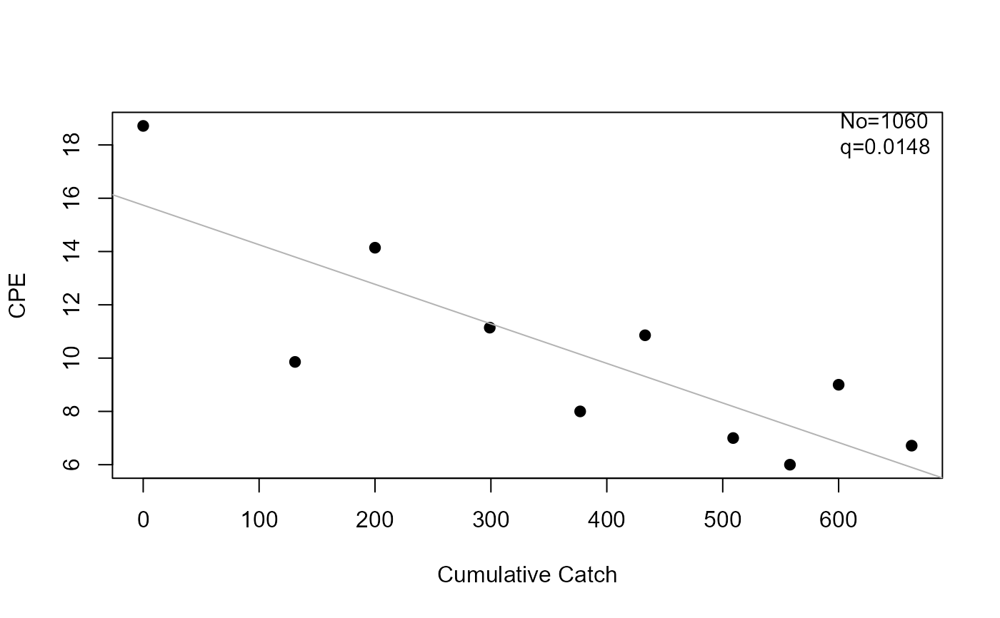
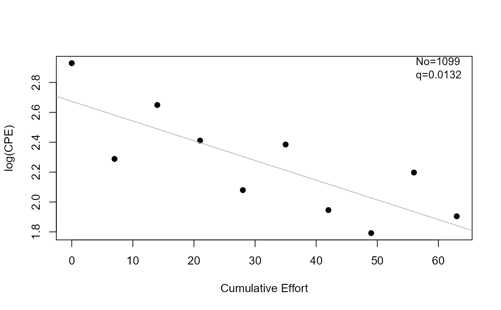

Computes the Leslie or DeLury population estimate from catch and effort data.
Source:R/depletion.R
depletion.RdComputes the Leslie or DeLury estimates of population size and catchability coefficient from paired catch and effort data. The Ricker modification may also be used.
Usage
depletion(catch, ...)
# S3 method for class 'formula'
depletion(
catch,
data,
method = c("Leslie", "DeLury", "Delury"),
Ricker.mod = FALSE,
...
)
# Default S3 method
depletion(
catch,
effort,
method = c("Leslie", "DeLury", "Delury"),
Ricker.mod = FALSE,
...
)
# S3 method for class 'depletion'
summary(
object,
parm = c("all", "both", "No", "q", "lm"),
verbose = FALSE,
as.df = FALSE,
...
)
# S3 method for class 'depletion'
coef(object, parm = c("all", "both", "No", "q", "lm"), as.df = FALSE, ...)
# S3 method for class 'depletion'
confint(
object,
parm = c("all", "both", "No", "q", "lm"),
level = conf.level,
conf.level = 0.95,
incl.est = FALSE,
as.df = FALSE,
...
)
# S3 method for class 'depletion'
anova(object, ...)
# S3 method for class 'depletion'
rSquared(object, digits = getOption("digits"), percent = FALSE, ...)
# S3 method for class 'depletion'
plot(
x,
xlab = NULL,
ylab = NULL,
pch = 19,
col.pt = "black",
col.mdl = "gray70",
lwd = 1,
lty = 1,
pos.est = "topright",
cex.est = 0.95,
...
)Arguments
- catch
A numeric vector of catches of fish at each time, or a formula of the form
catch~effort.- ...
Additional arguments for methods.
- data
A data.frame from which the variables in the
catchformula can be found. Not used ifcatchis not a formula.- method
A single string that indicates which depletion method to use
- Ricker.mod
A single logical that indicates whether to use the modification proposed by Ricker (=TRUE) or not (=FALSE, default).
- effort
A numeric vector of efforts expended at each time.
- object
An object saved from the
removalcall (i.e., of classdepletion).- parm
A specification of which parameters are to be given confidence intervals, either a vector of numbers or a vector of names. If missing, all parameters are considered.
- verbose
A logical that indicates whether a reminder of the method used should be printed with the summary results.
- as.df
A logical that indicates whether the results of
coef,confint, orsummaryshould be returned as a data.frame. Ignored insummaryifparm="lm".- level
Same as
conf.levelbut used for compatibility with genericconfintfunction.- conf.level
A single number that represents the level of confidence to use for constructing confidence intervals.
- incl.est
A logical that indicated whether the parameter point estimate should be included in the results from
confint. Defaults toFALSE.- digits
The number of digits to round the
rSquaredresult to.- percent
A logical that indicates if the
rSquaredresult should be returned as a percentage (=TRUE) or as a proportion (=FALSE; default).- x
An object saved from the
depletioncall (i.e., of classdepletion).- xlab
A label for the x-axis.
- ylab
A label for the y-axis.
- pch
A numeric that indicates the type of plotting character.
- col.pt
A string that indicates the color of the plotted points.
- col.mdl
A string that indicates the color of the fitted line.
- lwd
A numeric that indicates the line width of the fitted line.
- lty
A numeric that indicates the type of line used for the fitted line.
- pos.est
A single string to identify where to place the estimated population estimate and catchability on the plot. Can be set to one of
"bottomright","bottom","bottomleft","left","topleft","top","topright","right"or"center"for positioning the estimated mortality rates on the plot. Typically"bottomleft"(DEFAULT) and"topright"will be “out-of-the-way” placements. Setpos.esttoNULLto remove the estimated population size and catchability coefficient from the plot.- cex.est
A single numeric that identifies the character expansion value for the estimated population estimate and catchability placed on the plot.
Value
A list with the following items:
method A string that indicates whether the
"Leslie"or"DeLury"model was used.catch The original vector of catches.
effort The original vector of efforts.
cpe A computed vector of catch-per-unit-effort for each time.
KorE A computed vector of cumulative catch (K; Leslie method) or effort (E; DeLury method).
lm The
lmobject from the fit of CPE on K (Leslie method) or log(CPE) on E (DeLury method).est A 2x2 matrix that contains the estimates and standard errors for No and q.
Details
For the Leslie method, a linear regression model of catch-per-unit-effort on cumulative catch prior to the sample is fit. The catchability coefficient (q) is estimated from the negative of the slope and the initial population size (No) is estimated by dividing the intercept by the catchability coefficient. If Ricker.mod=TRUE then the cumulative catch is modified to be the cumulative catch prior to the sample plus half of the catch of the current sample.
For the DeLury method, a linear regression model of log (catch-per-unit-effort) on cumulative effort is fit. The catchability coefficient (q) is estimated from the negative of the slope and the initial population size (No) is estimated by dividing the intercept as an exponent of e by the catchability coefficient. If Ricker.mod=TRUE then the cumulative effort is modified to be the cumulative effort prior to the sample plus half of the effort of the current sample.
Standard errors for the catchability and population size estimates are computed from formulas on page 298 (for Leslie) and 303 (for DeLury) from Seber (2002). Confidence intervals are computed using standard large-sample normal distribution theory with the regression error df.
testing
The Leslie method without the Ricker modification and the DeLury method with the Ricker modification matches the results from deplet in fishmethods for the darter (from fishmethods), LobsterPEI and BlueCrab from FSAdata, and SMBassLS for N0 to whole numbers, the SE for No to one decimal, q to seven decimals, and the SE of q to at least five decimals.
The Leslie method matches the results of Seber (2002) for N0, q, and the CI for Q but not the CI for N (which was so far off that it might be that Seber's result is incorrect) for the lobster data and the q and CI for q but the NO or its CI (likely due to lots of rounding in Seber 2002) for the Blue Crab data.
The Leslie and DeLury methods match the results of Ricker (1975) for No and Q but not for the CI of No (Ricker used a very different method to compute CIs).
References
Ogle, D.H. 2016. Introductory Fisheries Analyses with R. Chapman & Hall/CRC, Boca Raton, FL.
Ricker, W.E. 1975. Computation and interpretation of biological statistics of fish populations. Technical Report Bulletin 191, Bulletin of the Fisheries Research Board of Canada. [Was (is?) from http://www.dfo-mpo.gc.ca/Library/1485.pdf.]
Seber, G.A.F. 2002. The Estimation of Animal Abundance. Edward Arnold, Second edition (reprinted).
Author
Derek H. Ogle, DerekOgle51@gmail.com
Examples
## Leslie model examples
# no Ricker modification
l1 <- depletion(SMBassLS$catch,SMBassLS$effort,method="Leslie")
summary(l1)
#> Estimate Std. Err.
#> No 1.060296e+03 1.692676e+02
#> q 1.484403e-02 3.520491e-03
summary(l1,verbose=TRUE)
#> The Leslie method was used.
#> Estimate Std. Err.
#> No 1.060296e+03 1.692676e+02
#> q 1.484403e-02 3.520491e-03
summary(l1,parm="No")
#> Estimate Std. Err.
#> No 1060.296 169.2676
rSquared(l1)
#> [1] 0.6896648
rSquared(l1,digits=1,percent=TRUE)
#> [1] 69
coef(l1)
#> No q
#> 1.060296e+03 1.484403e-02
confint(l1)
#> 95% LCI 95% UCI
#> No 6.699638e+02 1.450627e+03
#> q 6.725759e-03 2.296229e-02
confint(l1,incl.est=TRUE)
#> Est 95% LCI 95% UCI
#> No 1.060296e+03 6.699638e+02 1.450627e+03
#> q 1.484403e-02 6.725759e-03 2.296229e-02
confint(l1,incl.est=TRUE,parm="No")
#> Est 95% LCI 95% UCI
#> No 1060.296 669.9638 1450.627
confint(l1,incl.est=TRUE,parm="q")
#> Est 95% LCI 95% UCI
#> q 0.01484403 0.006725759 0.02296229
confint(l1,incl.est=TRUE,parm="lm")
#> Est 95% LCI 95% UCI
#> (Intercept) 15.73905467 12.25084983 19.227259511
#> K -0.01484403 -0.02296229 -0.006725759
plot(l1)

# with Ricker modification
l2 <- depletion(SMBassLS$catch,SMBassLS$effort,method="Leslie",Ricker.mod=TRUE)
summary(l2)
#> Estimate Std. Err.
#> No 1.077571e+03 1.778035e+02
#> q 1.525078e-02 3.911632e-03
confint(l1,incl.est=TRUE)
#> Est 95% LCI 95% UCI
#> No 1.060296e+03 6.699638e+02 1.450627e+03
#> q 1.484403e-02 6.725759e-03 2.296229e-02
plot(l2)
## DeLury model examples with no Ricker modification
d1 <- depletion(SMBassLS$catch,SMBassLS$effort,method="DeLury")
summary(d1)
#> Estimate Std. Err.
#> No 1.098503e+03 1.916049e+02
#> q 1.319375e-02 3.585777e-03
rSquared(d1)
#> [1] 0.6285719
confint(d1,incl.est=TRUE)
#> Est 95% LCI 95% UCI
#> No 1.098503e+03 6.566616e+02 1.540345e+03
#> q 1.319375e-02 4.924937e-03 2.146257e-02
plot(d1)

# Leslie model using formula notation
l3 <- depletion(catch~effort,data=SMBassLS)
summary(l3)
#> Estimate Std. Err.
#> No 1.060296e+03 1.692676e+02
#> q 1.484403e-02 3.520491e-03
# Leslie model by group (requires dplyr package)
# Dummy example data (lake=="A" is SMBassLS example ... just FYI)
tmpdf <- data.frame(ct=c(131,69,99,78,56,76,49,42,63,47,
117,75,87,67,58,67,42),
ft=c(7,7,7,7,7,7,7,7,7,7,
5,7,5,5,4,6,5),
lake=as.factor(c(rep("A",10),rep("B",7))))
if (require(dplyr)) {
res <- tmpdf %>%
dplyr::group_by(lake) %>%
dplyr::group_modify(~confint(depletion(ct~ft,data=.x),
incl.est=TRUE,as.df=TRUE)) %>%
as.data.frame() # removes tibble and grouping structure
res
}
#> Warning: Estimates are suspect as model did not exhibit a significantly (p>0.05) negative slope.
#> lake No No_LCI No_UCI q q_LCI q_UCI
#> 1 A 1060.2956 669.9638 1450.627 0.01484403 6.725759e-03 0.02296229
#> 2 B 881.1601 237.1065 1525.214 0.02270663 -9.206464e-05 0.04550533